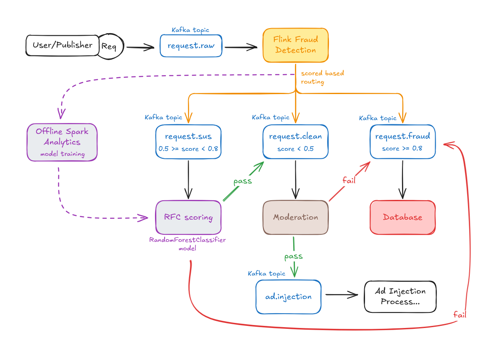
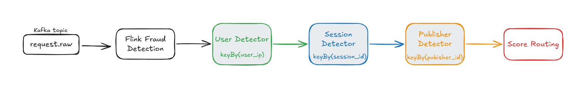
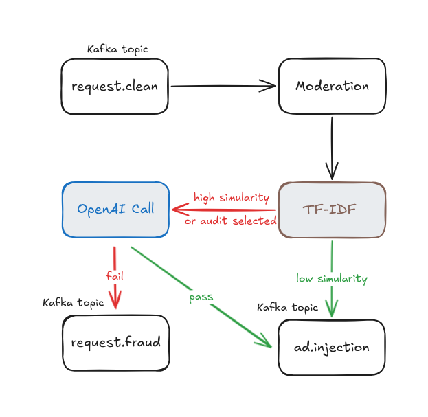

Overview
Fully made by Nikola Jagurinoski · FINKI, University of Ss. Cyril and Methodius · jagurinoskini@gmail.com
This pipeline is the fraud and content-safety layer for Adstract AI — an AI ad network that serves context-aware sponsored suggestions inside chat. Ad networks face a double threat: publishers inflating requests with fake traffic and users submitting unsafe or non-advertisable prompts. This pipeline evaluates every request through multiple defense layers before it reaches ad injection.
This project builds a real-time streaming pipeline that detects fraudulent ad requests and moderates unsafe content using Apache Kafka as the event backbone, Apache Flink for stream processing with stateful fraud detection, and Apache Spark for offline ML model training. The pipeline uses real traffic data with fraud requests injected to simulate realistic threat patterns. Each request is evaluated through multi-scope detectors (user, session, publisher), scored by a RandomForest classifier, and checked for content safety before reaching the Adstract ad injection layer.
Key components include a request simulator, five Kafka topics for pipeline decoupling, Flink-based real-time fraud detection with watermarking and keyed state, a moderation service supporting both TF-IDF similarity gating and OpenAI API modes, and a Spark ML pipeline that trains and serializes fraud classification models from historical pipeline logs.
Real-Time Processing
Flink-based stream processing with event-time watermarks, managed keyed state, and per-identity windowed burst detection.
Multi-Stage Detection
Rule-based filtering across 3 scopes followed by optional ML-based RFC scoring for suspicious requests.
Batch Analytics
Spark ML pipeline trains RandomForest models from historical logs, computes risk rollups, and serializes model artifacts.
Data Pipeline
Every request’s journey through five Kafka topics, three detection stages, and one ML training pipeline. Click a component in the diagram below to learn more.

Click a component above to see details.
Request Simulator
Streams real ad request traffic from real GPT conversation data (WildChat, 175k prompts) with fraud requests injected for controlled evaluation. Supports normal and fraud traffic profiles with configurable burst and bot patterns.
Kafka Event Stream
Five topics decouple all pipeline stages: requests.raw (ingress),
requests.sus (suspicious), requests.clean (fraud-clean),
requests.fraud (blocked), and ad.injection (approved).
Flink Fraud Detection
Assigns event-time watermarks, keys the stream through three detectors (User → Session → Publisher), and routes by score: clean (<0.5), suspicious (0.5–0.8), or fraud (≥0.8).
RFC Scoring Planned
Consumes requests.sus and applies the Spark-trained RandomForest model to score suspicious
requests. Cleared requests go to requests.clean; confirmed fraud goes to
requests.fraud.
Content Moderation
Analyzes prompt content for safety using mock (rule-based keyword + TF-IDF) or OpenAI
(omni-moderation-latest) modes. Prompt caching via SHA256 hash. Routes clean to
ad.injection, unsafe to requests.fraud.
Spark Training
Exports historical logs, trains a RandomForestClassifier on features (scam keywords, ASN, fraud score), computes risk rollups per IP/publisher/ASN/session, and serializes model artifacts for RFC scoring.
Fraud Detection
Flink evaluates each request across three scopes — stateless, user/session, and publisher. Rules are scored incrementally; the final score determines whether the request is clean, suspicious, or fraud.

| Scope | Rule | Reason | Weight |
|---|---|---|---|
| Stateless Rules | |||
| Stateless | Negative Prompt | negative_prompt |
0.2 |
| Stateless | Bad User Agent | bad_user_agent |
0.2 |
| Stateless | ASN Risk | asn_risk |
0.2 |
| Stateless | Language/Country Mismatch | language_mismatch_country |
0.1 |
| User/IP Scope | |||
| User | IP Burst | ip_burst |
0.6 |
| Session Scope | |||
| Session | Session Burst | session_burst |
0.4 |
| Session | Session IP Churn | session_ip_churn |
0.4 |
| Session | Session Country Hop | session_country_hop |
0.5 |
| Session | Session ASN Churn | session_asn_churn |
0.4 |
| Session | Prompt Replay | prompt_replay |
0.4 |
| Session | Regular Cadence | regular_cadence |
0.3 |
| Publisher Scope | |||
| Publisher | Publisher Burst | publisher_burst |
0.3 |
| Publisher | Publisher Suspicious Rate | publisher_suspicious_rate |
0.3 |
| Publisher | Publisher Bad UA Rate | publisher_bad_ua_rate |
0.3 |
Rule Explorer
Toggle rules on/off to see their effect on the total fraud score.
Stateless Rules (4)
User/IP Rules (1)
Session Rules (6)
Publisher Rules (3)
Content Moderation
Moderation checks only requests.clean.
It compares the incoming prompt against unsafe reference data using TF-IDF + cosine similarity,
calls OpenAI only for risky prompts or a 2% audit sample, sends safe requests to ad.injection,
and sends unsafe requests to requests.fraud.

Flow
requests.clean
→ Moderation
→ low similarity, no audit
→ ad.injection
→ high similarity
→ OpenAI final check
→ clean → ad.injection
→ flagged → requests.fraud
→ low similarity, audit selected (2%)
→ OpenAI final check
→ clean → ad.injection
→ flagged → requests.fraud
→ OpenAI error
→ ad.injection
→ marked as openai_error_allowHow TF-IDF Works Here
TF-IDF turns text into vectors. Moderation does this:
- Load unsafe reference dataset
- Normalize reference prompts and bad terms
- Fit TF-IDF vectorizer
- Precompute reference vectors
- Normalize incoming prompt
- Vectorize incoming prompt
- Calculate cosine similarity
Each incoming prompt is compared to known unsafe examples. If similarity is high, the request is risky.
similarity ≥ 0.30 → risky enough for OpenAI check
similarity < 0.30 → probably safe
Spark Training
Spark processes historical export data to train fraud detection models and compute risk profiles for IPs, publishers, ASNs, and sessions.
Feature Engineering
Three features for the RandomForest model:
contains_scam— Regex match against scam keywordsasn— Autonomous System Number (network risk)fraud_score_feature— Prior Flink fraud score
Risk Rollups
ip_risk_scores.json— Per-IP metricspublisher_risk_scores.json— Per-publisherasn_risk_scores.json— Per-ASN risksession_risk_scores.json— Per-session fraud
Model Artifacts
fraud_model.pkl— Serialized RandomForestmodel_metrics.json— Accuracy + classification reportfeature_columns.json— Feature schema
Pipeline Results
A 2,000-request end-to-end pipeline test with req_id correlation across all stages.
| Metric | Value |
|---|---|
| Total requests sent | 2,000 |
| Allowed to ad injection | 1,626 |
| Denied before Flink (shallow) | 374 |
| Flink verdict: suspicious | 1,240 |
| Flink verdict: clean | 386 |
| Flink verdict: fraud | 0 |
| Session summaries | 336 |
Analysis
- Shallow denials are mostly
ip_burstcombinations (especially withsuspicious_ua). - Many sessions hit fallback IP
8.8.8.8, inflating repeated-IP signals. - Flink marks as
suspiciousat any score above 0.5, so suspicious dominates. - No requests exceeded the 0.8 fraud threshold in this test run.
WildChat Dataset
175k real GPT conversations from April 2023. Provides prompt text, moderation labels, 30+ languages, and unique conversation IDs used as session/publisher identifiers.
175,238 rows across 2 shardsGeoLite2
MaxMind GeoIP databases for IP-to-location resolution. ~92% of random public IPv4s resolve to a country. Used for country-hop detection and language/country mismatch rules.
City + Country databasesTraffic Profiles
Two traffic profiles: normal (realistic behavior) and fraud (bursts, bot
patterns, suspicious IP churn) for controlled experiments.
Getting Started
Run the full pipeline locally in a few steps.
# Python 3.10+
# Docker + Docker Composedocker-compose up -dpip install -r requirements.txtpython scripts/transform_wildchat_user_prompts.py# Terminal 1: Request simulator
python kafka/producers/request_simulator.py
# Terminal 2: Flink fraud detection
python flink_service/fraud_detection.py
# Terminal 3: Moderation consumer
python pipeline_consumers/moderation_consumer.py
# Terminal 4: Debug consumer
python test_consumer.py./scripts/test_full_pipeline.sh
./scripts/test_fraud_block_flow.sh
./scripts/test_moderation_block_flow.sh# Export historical logs
python spark_service/historical_exporter.py \
--from-beginning --idle-seconds 30
# Run training
python spark_service/spark_training.pyInteractive Pipeline View
Watch the full request lifecycle — from ingestion to ad injection — in an animated walkthrough.
requests.raw
Fraud Detection
ML Training